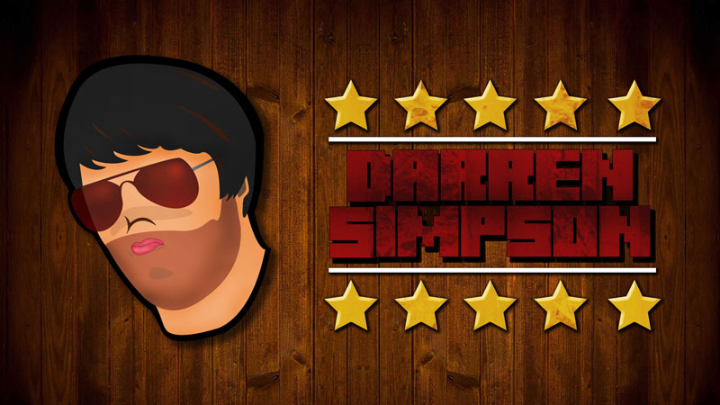
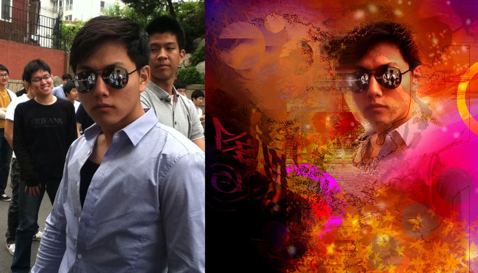

Other Work
A collection of loose work featuring illustrations, photo manipulations and anything else that may get added along the way.



A collection of loose work featuring illustrations, photo manipulations and anything else that may get added along the way.